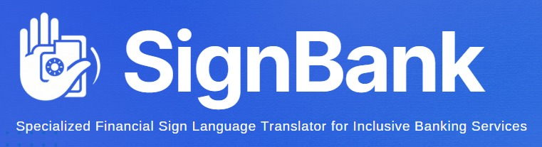
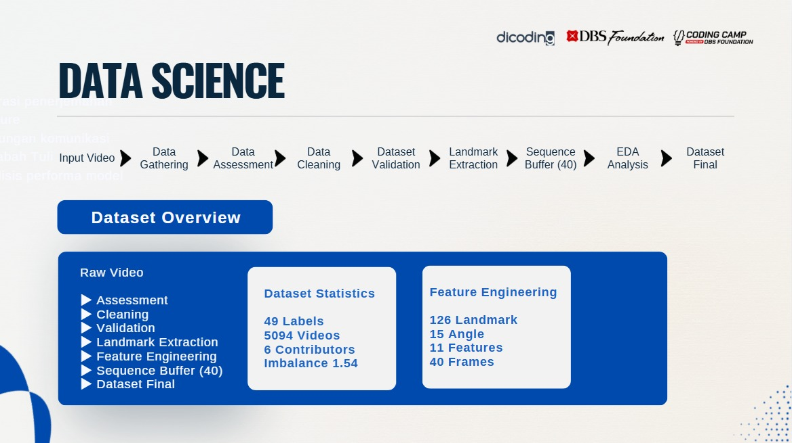
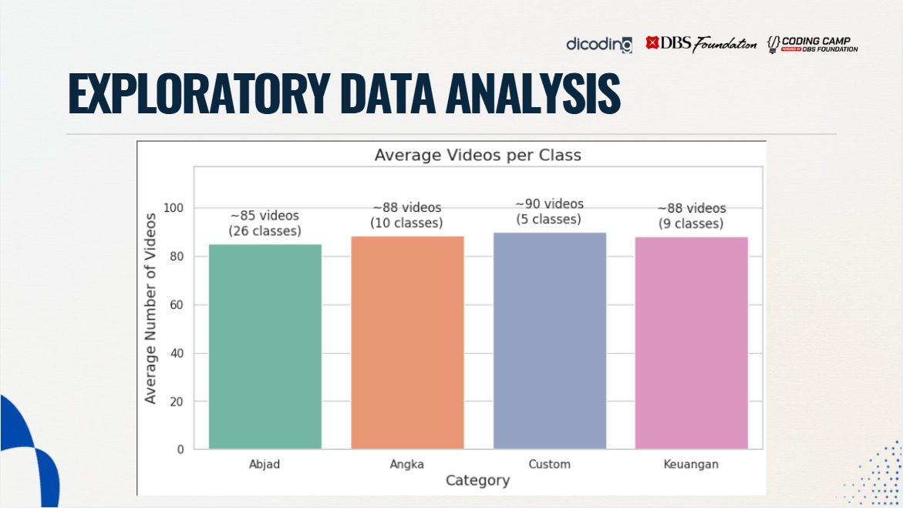
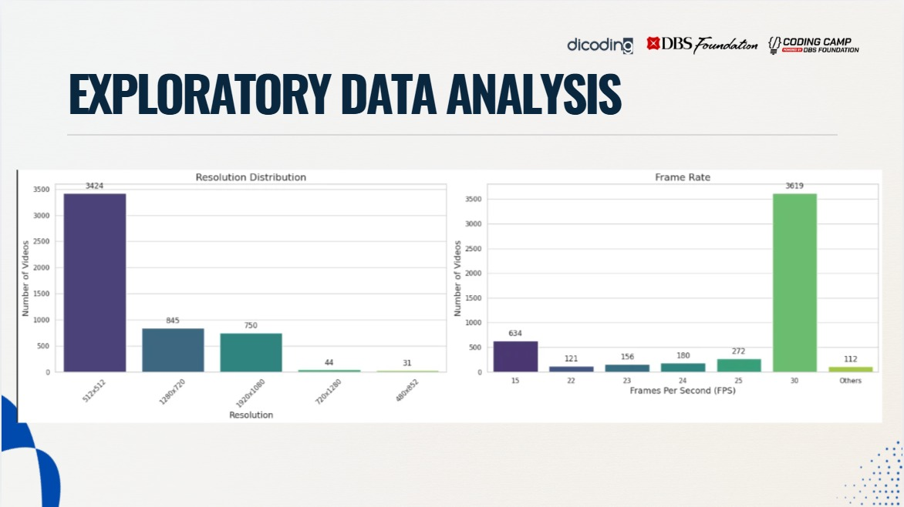
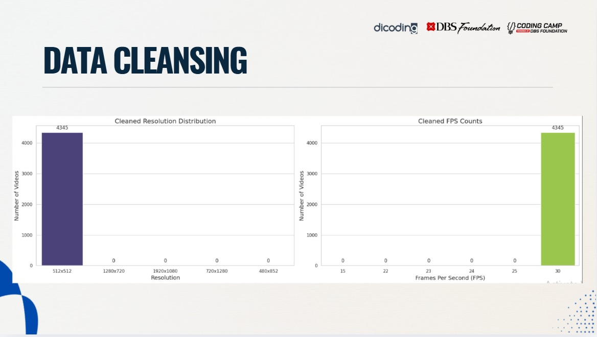
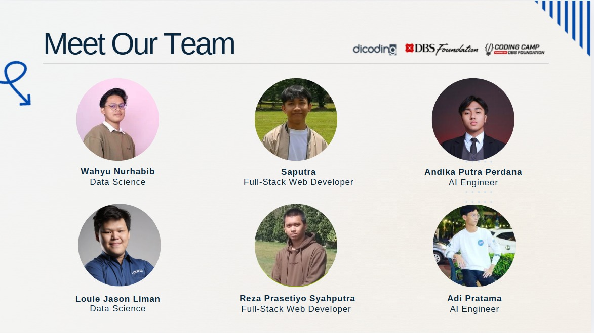

An AI-powered financial sign language translation platform bridging the communication gap between Deaf customers and banking staff through real-time Computer Vision. Developed as a capstone project for the graduation requirement of the Coding Camp 2026 program by DBS Foundation.
A significant portion of Deaf and Hard-of-Hearing individuals face barriers accessing financial services. Communication relies heavily on slow written notes, typing, or third-party assistance, leading to reduced independence, communication delays, and potential misunderstandings regarding sensitive financial information.
SignBank AI provides a specialized translation system focusing entirely on banking terminology. It translates gestures into text in real-time, features an interactive financial sign language glossary, and serves as a learning resource to enable seamless transactions between customers and bank officers.
Since no public dataset existed for financial BISINDO, our team built a custom video-based gesture dataset specifically for this project.

The foundation of SignBank AI relies on a robust data science workflow. Because no public dataset existed for Indonesian Financial Sign Language (BISINDO), the workflow started entirely from scratch—from data collection across multiple contributors to the final sequence generation for the machine learning model.
Through Exploratory Data Analysis (EDA), I initially inspected the collected gesture data to understand its raw characteristics. The data was heavily inconsistent: videos came in different resolutions, frame rates (FPS), and varying lighting conditions.


At this stage, the data was far from clean. Because it existed in completely different formats and structures, it could not be fed directly into any machine learning pipeline yet. The EDA also revealed a moderate class imbalance (Imbalance Ratio: 1.54) that needed to be addressed.

To bridge the gap between raw, unstructured video data and the machine learning model, I developed a strict data cleansing pipeline. All videos were standardized to a uniform 512x512 resolution and a consistent 30 FPS. Low-quality recordings, extremely short videos, and ambiguous gestures were entirely removed.
By rigorously cleaning the data and handling the feature engineering (extracting precise hand landmarks using MediaPipe), I ensured that the AI Engineering team received high-quality, structured, and uniform sequence data, perfectly primed and ready to train the deep learning model.
The AI system uses an advanced Computer Vision pipeline utilizing sequential modeling to capture the temporal nuances of sign language:
Watch a real-time demonstration of our financial sign language translation model bridging the communication gap.
